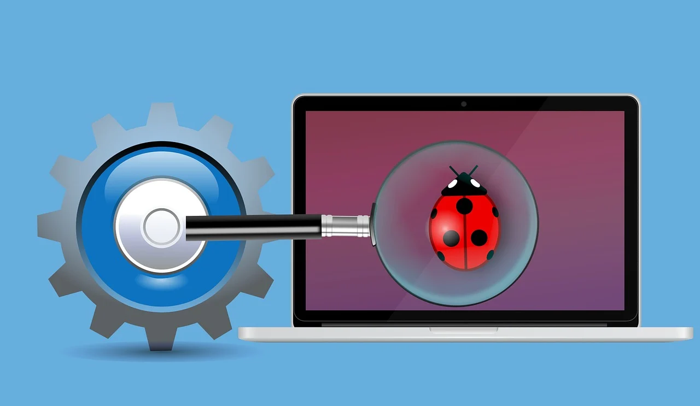

Designing and developing websites for individuals, small businesses, or organizations. This could include creating static websites using Angular JS or Express JS.

Bug Fixing and Troubleshooting
Providing assistance to clients by identifying and fixing bugs or issues in their software projects. This could involve debugging code, analyzing error logs, or improving overall performance.
Code Review and Refactoring
Reviewing existing codebases, identifying areas for improvement, and refactoring code to enhance readability, maintainability, and performance.